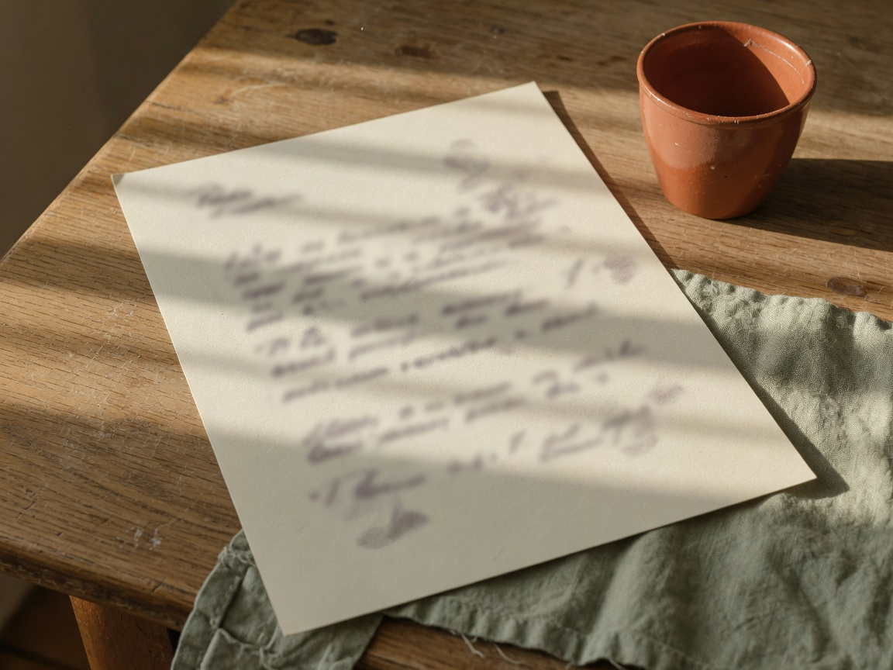

24 August 2026
Friend,
My name is Ryan Sheridan Johnson. People call me RJ.
This is the page I want you to land on. Not a shop window. Not a list of what I built. A letter from a man you can find.
I have been in the people business my whole life. A suit and a door at five. A new school every year after that. The rooms changed — software, kitchens, roofs, air. The work never did. You sit with someone. You read them. You tell the truth. You close, or you walk.
This year the big shops started selling a teammate that lives on their computer. You message it. They keep the house. I got tired of renting a mind.
The wolf is fed by its legs. The problem was never the power. It was the cable.
I do not sell a teammate. I offer a man a way to keep his own — and still pick up the phone.
A builder looked at the work this spring and said it was the most thought-out architecture he had seen. He was not being kind. He was being precise.
If you want the long paper — Sun-to-Token, version 3.2 — it lives at the DOI:
https://doi.org/10.5281/zenodo.22083896
